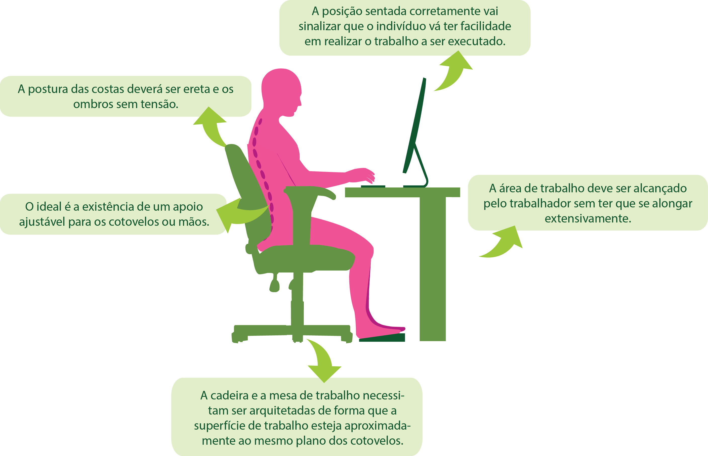

A preocupação com o bem-estar passa a ser não apenas uma relevância do contexto da vida cotidiana, mas também no âmbito profissional.
Uma boa percepção de qualidade de vida perpassa em um primeiro momento, pelo ambiente físico-social e logo adiante pelas escolhas do indivíduo para realização pessoal. Portanto uma má ou boa concepção sobre qualidade de vida vai depender do ambiente no qual o sujeito está inserido e as oportunidades disponíveis para sua satisfação.
Diferentemente do que algumas pessoas acham a satisfação de um trabalhador não é algo que diz respeito apenas a ele. A satisfação do colaborador vai depender principalmente da Gestão Organizacional, já que empresas são formadas de pessoas motivadas, felizes e engajadas, prontas para mostrar seu lado profissional e trazer bons frutos para a empresa.